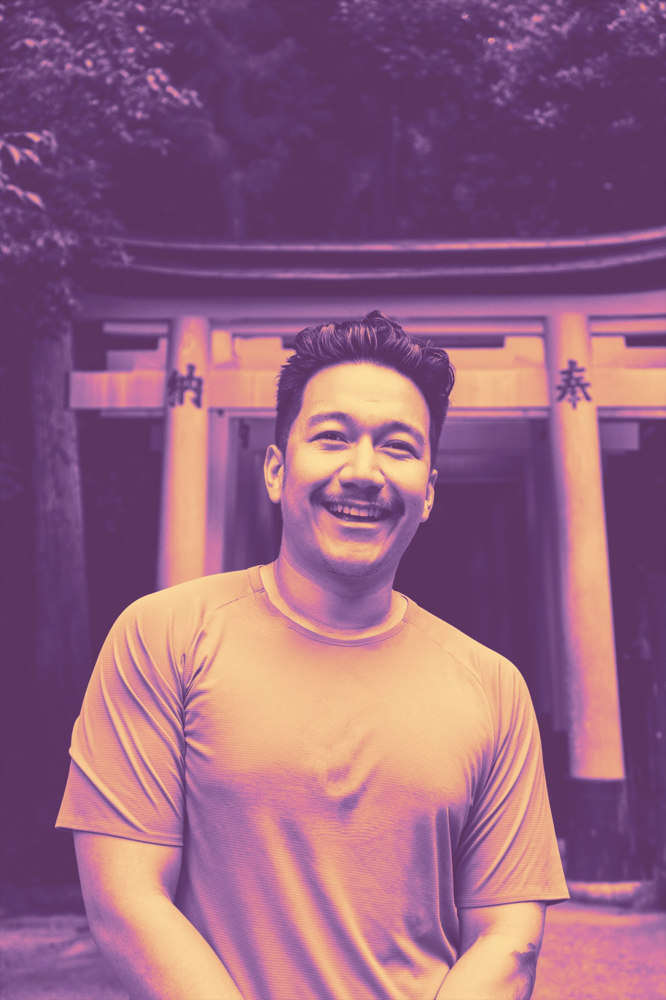

About Victor Tran
Hi! I’m Victor, or Vic. I’m a visual designer at IBM working on IBM watsonx Orchestrate. I design interface hierarchy, visual patterns, reusable components, and guidance for enterprise AI and automation workflows, and I work closely with UX, product, and development partners through implementation.
Before IBM watsonx Orchestrate, I designed and evaluated IBM Cloud Observability workflows from 2021 through 2023. My broader background spans design systems, brand systems, responsive web, editorial design, and illustration. Earlier, I grew from graphic designer into communications leadership at Pi Kappa Phi and The Ability Experience.
I was the first person in my family to graduate from college and earned a BFA in Graphic Design from Western Michigan University. That visual foundation still shapes how I work: understand the system, care about the details, and make the result useful to both the people using it and the people building it.
Outside of work, I paint, play video games, travel, and try my best to do good in my community. Also: open to voice over work.
I'm around, let's chat! You can reach me at victortran794@gmail.com.

What I’m doing now
Since January 2024, I’ve been a Visual Designer at IBM watsonx Orchestrate in Austin, Texas, focused on enterprise AI and automation while staying close to design systems and implementation.
Now
Visual Designer, IBM watsonx Orchestrate | AI & Automation
January 2024 to present · Enterprise product workflows
Previously at IBM
Previous role
Visual Designer, IBM Cloud | Observability
January 2021 to December 2023 · Enterprise cloud products
What I design
How I work
Past work
Clients & employers
- Pi Kappa Phi Fraternity Headquarters
- The Ability Experience
- Performance Contracting, Inc.
- Holmes Murphy
- Atrium Health
- Elevate
Right now I am...
Thinking about
Social justice
Dreaming of
A diet coke on the beach
Eating at
Chinese buffet down the street
Training for
Summer 2027
Playing
World of Warcraft (Midnight)
Watching
RuPaul's Drag Race
Mini game
A little Tetris
While you’re here, enjoy some Tetris because I like Tetris. Click in to play. Arrow keys move, ↑ rotates, Space hard-drops, C holds, and P pauses.
On shuffle
A tour of my taste
A few songs from various phases of listening. Enjoy the eclectic mix.